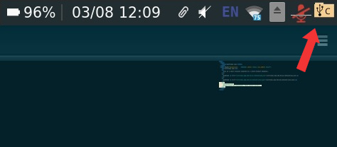

Cartridge App
This is a small program inspired by a cs410 project proposal.
Download cartridge_app-x86_64-pc-windows-gnu.exe
Download cartridge_app-x86_64-unknown-linux-gnu
Usage
Double-click the executable.
There should now be an icon in your taskbar like the one in the below screenshot:

Now you can plug in any USB drive containing one of the following files:
- cartridge-pres.pdf
- cartridge-pres.pptx
- cartridge-pres.ppt
- cartridge-vid.mp4
- cartridge-vid.mov
- cartridge-vid.avi
These filenames are case-sensitive. The first one found will be opened in
an appropriate application, and launched using fullscreen parameters.
On windows the application unpacks a copy of `mpv.exe` for videos and `SumatraPDF.exe` for presentations.
On linux systems the application assumes `mpv` and `xpdf` are installed. Currently we do not check
that assumption, if you would like to do that send a pull request to me at
https://github.com/Jeffrey-P-McAteer/cartridge-app.
https://www.cs.odu.edu/~jmcateer/cartridge_app/